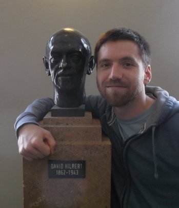

I am a mathematician working in algebraic semigroup theory.
I received my PhD from the University of Southampton in 2013 under the supervision of
Jim Renshaw.
My research interests include: representations of monoids, non-additive homology and module theory.
I have also recently been interested in combinatorial problems related to free semigroups, and computational algebra.
email: alex "dot" bailey "at" alumni "dot" soton "dot" ac "dot" uk